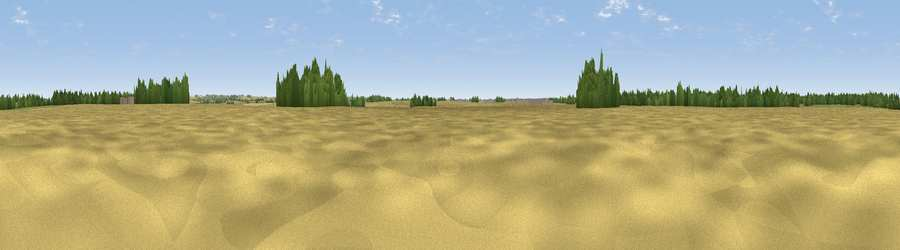

Viewpoint near Scotton
#45237 in England · top 98% of its area beats it · near ScottonThe view, rendered

A 360° render of this exact spot computed from the terrain model, tree cover and land cover — summer colours, afternoon light, calibrated against photographs of famous viewpoints. Real trees, hedges and buildings will differ in detail.
The panorama
Grey silhouette: terrain skyline in each direction (720 bearings, Earth curvature and refraction included). Dashed green: skyline with trees (+15 m) and buildings (+8 m) as obstacles. Blue strip: how far the ground is visible on each bearing.
Where the view opens
Wedge length = distance to the farthest visible ground on that bearing (vegetation-aware). Rings at 10, 25 and 50 km.
What fills the view
79% cropland · 10% grassland · 9% woodland · 2% built-up
Angular shares of the visible panorama (visual magnitude), not map area. Landscape diversity 0.30 (0–1 Shannon).
Key numbers
More beautiful places nearby
The staircase of upgrades: each row has a higher view potential than everything closer. Driving times are estimates from straight-line distance, calibrated against real road routing — check an actual route before setting out.
| Place | Direction | Drive | Score |
|---|---|---|---|
| Viewpoint near Scotter | NE · 3 km | ~8 min | 24.1 |
| Viewpoint near Scotter | NNE · 4 km | ~10 min | 27.0 |
| Viewpoint near Laughton | WNW · 4 km | ~10 min | 33.9 |
| Viewpoint near Blyton | SW · 5 km | ~11 min | 39.2 |
| Viewpoint near Grayingham | E · 6 km | ~13 min | 50.9 |
| Tower Hill | W · 12 km | ~23 min | 52.3 |
| Viewpoint near Gringley on the Hill | WSW · 15 km | ~28 min | 59.3 |
| Beacon Hill | WSW · 16 km | ~28 min | 65.7 |
53.47340, -0.67396 · source: osm peak · position refined by local search. Computed location — check access rights before visiting.